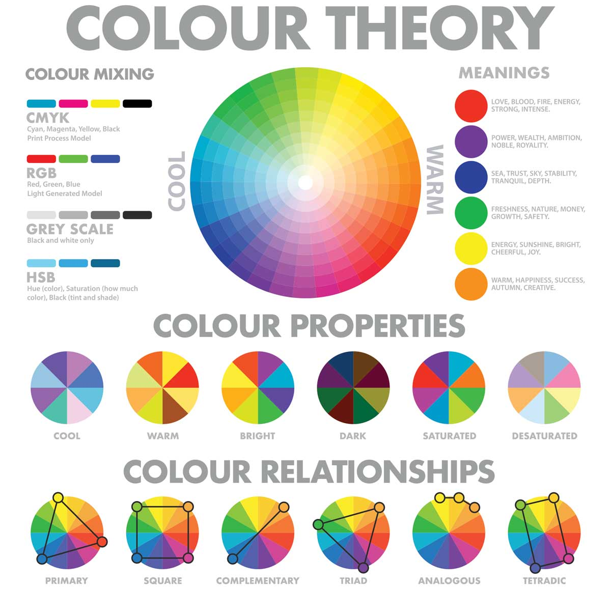

Dive Into Traditional Arts:
Tutorials
This section contains tutorials about these topics:
Anatomy

Learning anatomy for drawing is a fundamental skill for any artist, as it helps in creating more realistic and believable figures.
Here's some structured approach to learning anatomy for drawing:
Start with Basic Shapes:
Understand the basic shapes that make up the human body. These include spheres for the head, cylinders for the
arms and legs, and cubes for the torso. Practice sketching these shapes from various angles.
Study Skeleton Anatomy:
Learn the skeletal structure of the human body. Study the bones, their shapes, sizes, and how they articulate
with each other. Understanding the skeleton provides a solid foundation for drawing the human figure.
Proportions:
Learn the proportions of the human body. Understand concepts such as the "head unit" measurement, which helps
in maintaining correct proportions in your drawings. Pay attention to the relative lengths of body parts and how
they vary based on factors like gender and age.
Gesture Drawing:
Practice gesture drawing to capture the overall movement and rhythm of the human figure.
Gesture drawing helps in understanding the dynamic poses and fluidity of the body.
Practice Regularly:
Like any skill, learning anatomy for drawing requires consistent practice.
Set aside dedicated time for drawing and practice different aspects of anatomy regularly.
Here are some useful links compiled to give further informations:
- Top 5 Dos and Don’ts of Drawing Anatomy
- Learn Anatomy to Improve Drawing the Human Body
- How to learn anatomy – 5 DOs and DON’Ts
Click the thumbnail to play the video:


Composition
Learning composition in art involves understanding how various elements such as line, shape, color,
texture, and space are arranged within a work to create a visually pleasing and harmonious composition.
Here's some guide on how to learn composition in art:
Study the Principles of Composition:
Familiarize yourself with fundamental principles of composition such as balance, contrast, rhythm,
emphasis, unity, and movement. These principles provide guidelines for arranging elements within a composition effectively.
Explore how these principles are applied in different art forms, including painting, drawing, photography, and graphic design.
Analyze Artworks:
Study artworks by master artists and analyze their compositions. Pay attention to how they use composition principles to create visually compelling works.
Analyze compositions in terms of their use of space, placement of elements, use of focal points, and overall organization.
Understand Visual Hierarchy:
Learn about visual hierarchy, which refers to the arrangement of elements in a way that guides the viewer's eye through the composition.
Experiment with different techniques such as scale, contrast, and placement to create a clear visual hierarchy in your own compositions.
Here are some useful links compiled to give further informations:
- Composition
- Composition in Painting: Everything in its right place
- Composition in the Arts: How to plan a Drawing or Painting
Click the thumbnail to play the video:


Lighting

Learning how to depict lighting and light sources in art is essential for creating realistic and dynamic images.
Here’s a some guide to help you understand and master lighting in your drawings:
Study the Basics of Light and Shadow:
Types of Lights
Direct Light:Light coming from a single source, such as the sun or a lamp.
Diffuse Light:Light that has been scattered, resulting in softer shadows, like an overcast sky.
Ambient Light:General lighting that illuminates a scene indirectly.
Elements of Light and Shadow
Highlight:The brightest spot where light directly hits the object.
Light:The area on the object receiving light but not as intensely as the highlight.
Core Shadow:The darkest part of the shadow on the object, away from the light source.
Cast Shadow:The shadow cast by the object onto another surface.
Reflected Light:Light that bounces back onto the object from surrounding surfaces.
Terminator:The line or area that separates the light side from the shadow side on an object.
Understand Light Direction and Source:
Single Light Source:Practice drawing objects with a single light source to understand how it affects shadows and highlights.
Multiple Light Sources:Learn how multiple lights interact, such as primary and secondary sources, and how they create overlapping shadows and highlights.
Natural vs. Artificial Light:Study the differences between natural light (sunlight, moonlight) and artificial light (lamps, candles) and their effects on objects.
Observe and Analyze Real Life:
Still Life:Set up still life arrangements with different light sources and observe how light and shadow behave.
Photography:Use photographs to study how light interacts with different surfaces and textures.
Life Drawing:If possible, draw from live models under varied lighting conditions to understand how light affects the human form.
Experiment with Different Materials and Textures:
Different materials reflect light differently. Practice drawing various textures like metal, glass, fabric, and skin to understand how light interacts with each.
Here are some useful links compiled to give further informations:
- A Beginners Guide to Light & Shadow – Part 1
- Light and Shadow in Art – The Fundamentals of Light, Part 1: The Science & The Basics Made Clear
- Easy tips to paint light and shadow
Click the thumbnail to play the video:


Color Theory

Learning color theory is essential for any artist, as it helps in creating harmonious and visually appealing artworks.
Here’s a structured approach to learning color theory:
Understand the Basics of Color Theory:
Primary Colors:Red, blue, and yellow. These colors cannot be made by mixing other colors.
Secondary Colors:Green, orange, and purple. These are created by mixing two primary colors.
Tertiary Colors:Colors made by mixing a primary color with a secondary color, e.g., red-orange, blue-green.
Learn About Color Properties:
Hue:The name of the color (e.g., red, blue).
Value:The lightness or darkness of a color.
Saturation (Chroma):The intensity or purity of a color.
Explore Color Schemes:
Monochromatic:Uses variations in lightness and saturation of a single color.
Complementary Colors:Colors opposite each other on the color wheel (e.g., blue and orange) which create contrast.
Analogous Colors:Colors next to each other on the color wheel, creating harmony.
Split-Complementary:Uses a base color and two adjacent tertiary colors of its complement.
Triadic:Uses three colors evenly spaced around the color wheel.
Tetradic (Double-Complementary):Uses two complementary color pairs.
Understand Color Context and Perception:
Study how colors interact with each other and how context can change the perception of a color.
Learn about color contrast, simultaneous contrast, and color dominance.
Experiment with Color Harmony and Balance:
Create artworks using different color schemes to understand how color harmony affects the overall composition.
Practice balancing colors to achieve a pleasing visual effect.
Here are some useful links compiled to give further informations:
- Basic Color Theory
- Color Theory 101: A Complete Guide to Color Wheels & Color Schemes
- A Comprehensive Guide to Color Theory for Artists
Click the thumbnail to play the video:


Poses
Learning to draw poses is a crucial skill for creating dynamic and realistic figures in art.
Here’s a structured approach to help you master drawing poses:
Understand Basic Anatomy:
Study the Human Skeleton: Familiarize yourself with the structure and proportions of the human skeleton. Learn the major bones and their connections.
Learn Muscle Groups: Understand the major muscle groups and how they influence the surface form of the body. Focus on how muscles change with different poses.
Master Proportions:
Head Units: Use the head unit method to measure and maintain correct proportions. For example, an average adult is about 7-8 heads tall.
Landmarks: Identify key landmarks on the body, such as the ribcage, pelvis, knees, and elbows, which help in maintaining correct proportions and alignment.
Learn Foreshortening:
Perspective: Practice drawing figures in perspective to understand foreshortening, which is the visual effect that causes objects to appear shorter than they are in reality when viewed from an angle.
Overlapping Forms: Focus on how different parts of the body overlap each other in extreme poses and angles.
Practice Dynamic Poses:
Action Poses:Draw figures in motion, such as athletes, dancers, or superheroes, to capture dynamic and expressive poses.
Exaggeration: Experiment with exaggerating poses to understand the extremes of movement and expression.
By combining anatomical knowledge, observational skills, and regular practice, you can improve your ability to draw realistic
and dynamic poses. Keep challenging yourself with new poses and techniques to continue growing as an artist.
Here are some useful links compiled to give further informations:
- How to Draw Poses: A Step-by-Step Guide from Beginner to Mastery
- How to Draw Any Pose from IMAGINATION
- Drawing Body Poses Step by Step: A Clear Guide for Beginners
Click the thumbnail to play the video:


Perspective

Learning perspective is essential for creating depth and realism in your drawings.
Here’s a structured approach to mastering perspective:
Understand Basic Anatomy:
Horizon Line: This represents the viewer's eye level and is where the sky meets the ground.
Vanishing Points: Points on the horizon line where parallel lines appear to converge. In one-point perspective, there's one vanishing point; in two-point perspective, there are two, and so on.
Start with One-Point Perspective:
Simple Shapes: This represents the viewer's eye level and is where the sky meets the ground.Draw basic shapes like cubes and rectangles using one vanishing point.
Guidelines: Use guidelines to connect the edges of your shapes to the vanishing point, ensuring accurate perspective.
Practice Scenes: Create simple scenes like roads, railways, or rooms using one-point perspective.
Move to Two-Point Perspective:
Multiple Vanishing Points: This represents the viewer's eye level and is where the sky meets the ground.Draw objects using two vanishing points on the horizon line, which are typically off to the sides.
Complex Forms: Practice drawing more complex forms like buildings, streets, and interiors.
Explore Three-Point Perspective:
Adding Depth: Introduce a third vanishing point, either above or below the horizon line, to create more dramatic perspectives, like looking up at a tall building or down from a height.
Dynamic Angles: Practice dynamic scenes, such as aerial views or worm’s eye views, using three-point perspective.
Understand and Practice Atmospheric Perspective:
Color and Value: Learn how color and value change with distance. Objects farther away appear lighter and less saturated.
Depth Cues: Use overlapping, size reduction, and diminishing detail to enhance the sense of depth.
Here are some useful links compiled to give further informations:
- The Beginning Artist’s Guide to Perspective Drawing
- A Beginner’s Guide to Perspective
- ONE POINT PERSPECTIVE DRAWING: THE ULTIMATE GUIDE
Click the thumbnail to play the video: